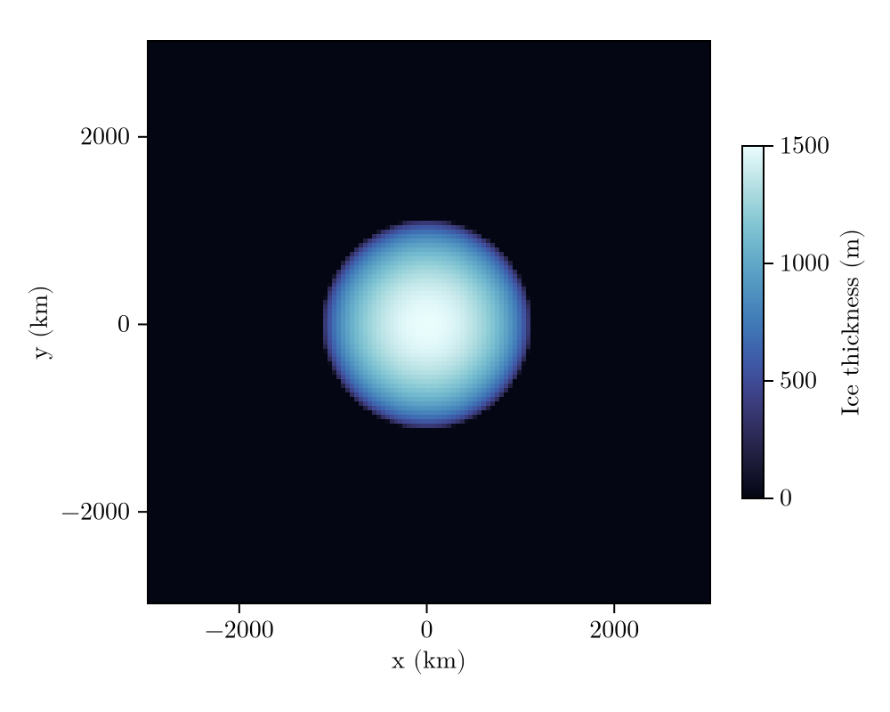
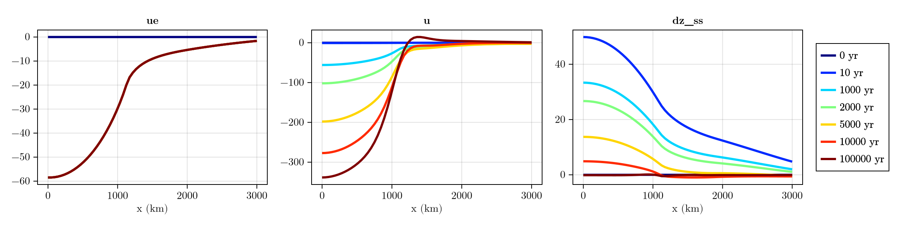
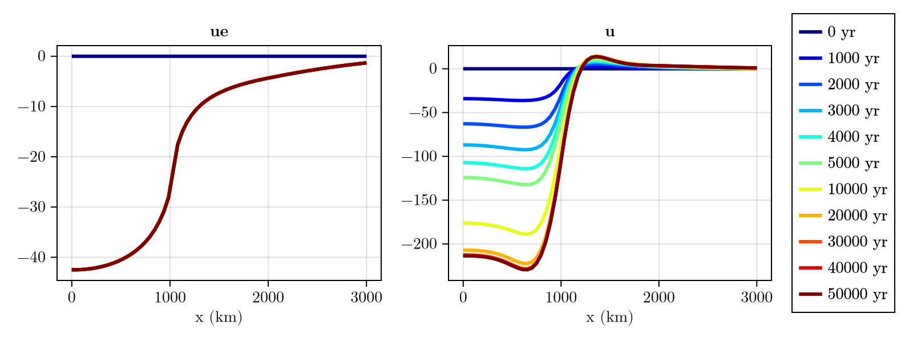
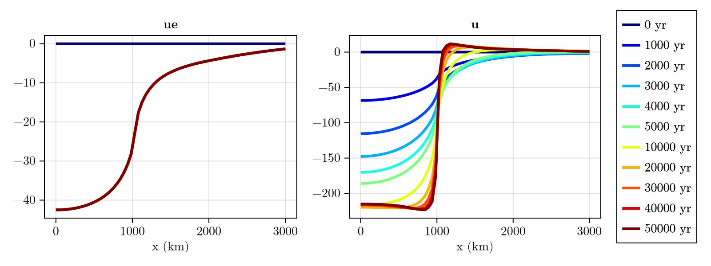

1D GIA benchmark
Comparison to 1D GIA models
To make things more interesting, we now propose to reproduce one of experiments proposed in a benchmark study of 1D GIA models, where the elastic and the gravitational responses are included (Spada et al., 2011). Test 1/2 (Figs. 9 and 10) consists of a 1D ice cap with a maximum thickness of $1500 \, \mathrm{m}$ and a maximum latitude of $10°$ (i.e. the ice cap has a radius of about $1000 \, \mathrm{km}$ wide). The lithosphere thickness is assumed to be $T = 100 \, \mathrm{km}$ and the mantle is assumed to be layered, with a viscosity of $ \eta = 10^{21} \, \mathrm{Pa \, s} $ in the upper mantle and $ \eta = 2 \times 10^{21} \, \mathrm{Pa \, s} $ in the lower mantle. The lithosphere is assumed to be elastic, with a shear modulus of $G = 50 \, \mathrm{GPa}$ and a Poisson's ratio of $\nu = 0.28$. The ice load is applied at time $t = 0$ and kept constant until $t = 100 \, \mathrm{kyr}$. The gravitational response and the resulting change in sea-surface elevation is computed, however without affecting the load that is applied to the solid Earth.
Spada et al. (2011) use parameters that differ from FastIsostasy's default. This can be easily incorporated by passing different values to the constructors of PhysicalConstants and SolidEarth.
using FastIsostasy, CairoMakie
W, n, T = 3f6, 7, Float32
domain = RegionalDomain(W, n)
c = PhysicalConstants{T}(rho_ice = 0.931e3)
H_ice_0 = zeros(domain) # Load: 0 at the beginning
alpha = T(10) # Load: cap with max colatitude 10°...
Hmax = T(1500) # ... and thickness 1500 m afterwards
H_ice_1 = stereo_ice_cap(domain, alpha, Hmax)
fig = plot_load(domain, H_ice_1)
This already looks a bit more like a real ice sheet! Again, let's wrap this into an interpolator passed to a BoundaryConditions instance. The elastic response is included by default in SolidEarth (unless specified, as done in the previous example) and the gravitational response can be activated by passing LaterallyVariableSeaSurface() to the RegionalSeaLevel constructor:
t_ice = [0, 1f-6, 100f3]
H_ice = [H_ice_0, H_ice_1, H_ice_1]
it = TimeInterpolatedIceThickness(t_ice, H_ice, domain) # Wrap in time interpolator
bcs = BoundaryConditions(domain, ice_thickness = it) # Pass to boundary conditions
sealevel = RegionalSeaLevel(surface = LaterallyVariableSeaSurface())
G = 50.605f9 # Shear modulus (Pa)
nu = 0.28f0 # Poisson ratio
E = G * 2 * (1 + nu) # Young modulus
lb = c.r_equator .- [6301f3, 5951f3, 5701f3] # 3 layer boundaries
solidearth = SolidEarth(
domain,
layer_boundaries = T.(lb),
layer_viscosities = [1f21, 1f21, 2f21],
litho_youngmodulus = E,
litho_poissonratio = nu,
rho_litho = 3100f0,
rho_uppermantle = 3500f0,
)
nout = NativeOutput(vars = [:u, :ue, :dz_ss], # Define the fields to be saved...
t = [0, 10, 1_000, 2_000, 5_000, 10_000, 100_000f0]) # And the time steps!
sim = Simulation(domain, bcs, sealevel, solidearth, (0, 100f3); nout = nout)
run!(sim)
fig = plot_transect(sim, [:ue, :u, :dz_ss])
By comparing these results to Fig. 9 of Spada et al. (2011), we can see that the deformational and gravitational response obtained by FastIsostasy are very similar to those obtained by 1D GIA models. Let's see how much time was required for this:
println("Computation time (s): $(sim.timer.t_computation[end])")Computation time (s): 1.8650856This is at least 3 orders of magnitude faster than typical 1D GIA models, without any major loss in accuracy!
Comparison to 3D GIA models
Swierczek-Jereczek et al. (2024) provides a comparison between FastIsostasy and a 3D GIA model, while assuming a 1D Earth structure. The first case assumes a layered Earth corresponding to the preliminary reference Earth model (PREM) and can be reproduced as follows:
H_ice_0 = zeros(domain) # Load: 0 at the beginning...
H_ice_1 = 1f3 .* (domain.R .< 1f6) # cylinder afterwards
t_ice = [0, 1, 50f3]
H_ice = [H_ice_0, H_ice_1, H_ice_1]
it = TimeInterpolatedIceThickness(t_ice, H_ice, domain)
bcs = BoundaryConditions(domain, ice_thickness = it)
solidearth = SolidEarth(
domain,
layer_boundaries = [100f3, 670f3],
layer_viscosities = [0.5f21, 5f21],
rho_uppermantle = 3.6f3,
lumping = FreqDomainViscosityLumping(),
)
nout = NativeOutput(vars = [:u, :ue], # Define the fields to be saved...
t = [0, 1f3, 2f3, 3f3, 4f3, 5f3, 10f3, 20f3, 30f3, 40f3, 50f3]) # And the time steps!
sim1 = Simulation(domain, bcs, sealevel, solidearth, (0, 50f3); nout = nout)
run!(sim1)
fig = plot_transect(sim1, [:ue, :u])
The second case assumes the absence of lithosphere and a homogeneous mantle with a viscosity of $\eta = 10^{21} \, \mathrm{Pa \, s}$:
solidearth = SolidEarth(
domain,
layer_boundaries = [1f0, 150f3],
layer_viscosities = [1f21, 1f21],
rho_uppermantle = 3.6f3,
)
nout = NativeOutput(vars = [:u, :ue], # Define the fields to be saved...
t = [0, 1f3, 2f3, 3f3, 4f3, 5f3, 10f3, 20f3, 30f3, 40f3, 50f3]) # And the time steps!
sim2 = Simulation(domain, bcs, sealevel, solidearth, (0, 50f3); nout = nout)
run!(sim2)
fig = plot_transect(sim2, [:ue, :u])
Finally, we can check the computation times:
println("Computation time (s): $(sim1.timer.t_computation[end])")
println("Computation time (s): $(sim2.timer.t_computation[end])")Computation time (s): 2.2492409
Computation time (s): 0.51612854Copy-pastable code
using FastIsostasy, CairoMakie
W, n, T = 3f6, 7, Float32
domain = RegionalDomain(W, n)
c = PhysicalConstants{T}(rho_ice = 0.931e3)
H_ice_1 = stereo_ice_cap(domain, T(10), T(1500)) # 10 deg colatitude, 1500 m thick
it = TimeInterpolatedIceThickness([0, 1f-6, 100f3],
[zeros(domain), H_ice_1, H_ice_1], domain)
bcs = BoundaryConditions(domain, ice_thickness = it)
# gravitational response on => laterally variable sea surface
sealevel = RegionalSeaLevel(surface = LaterallyVariableSeaSurface())
nu = 0.28f0
solidearth = SolidEarth(domain,
layer_boundaries = T.(c.r_equator .- [6301f3, 5951f3, 5701f3]),
layer_viscosities = [1f21, 1f21, 2f21],
litho_youngmodulus = 50.605f9 * 2 * (1 + nu),
litho_poissonratio = nu,
rho_litho = 3100f0,
rho_uppermantle = 3500f0)
nout = NativeOutput(vars = [:u, :ue, :dz_ss],
t = [0, 10, 1_000, 2_000, 5_000, 10_000, 100_000f0])
sim = Simulation(domain, bcs, sealevel, solidearth, (0, 100f3); nout = nout)
run!(sim)
plot_transect(sim, [:ue, :u, :dz_ss])